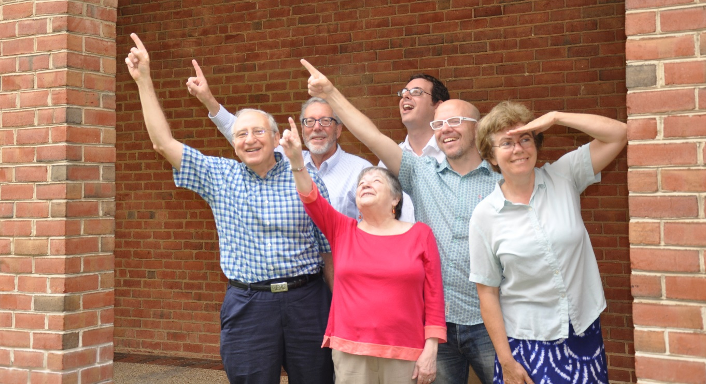

The much awaited "Designing the User Interface, 6th Edition is in progress!
This is a new, revised edition of the highly successful textbook on Human Computer Interaction originally developed by Ben Shneiderman and Catherine Plaisant at the University of Maryland.
Download Flyer
Designing the User Interface: Strategies for Effective Human-Computer Interaction provides a comprehensive introduction to the dynamic field of human-computer interaction (HCI). An expanded author team brings unparalleled industry and academic experience to this latest edition. Practical techniques, research-supported design guidelines, and a multitude of current examples and figures illustrate good design principles and practices, effectively guiding readers through their first HCI design projects.
So what's new in the 6th edition?
- Big emphasis on mobile
- Design case studies
- Totally revamped chapter on social media
- Expanded author team to increase breadth of experience
- More emphasis on UX (user experience)
- Watch for a revised, complete companion website

Authors: From left to right
As a Human-Computer Interaction University Associate Professor I was delighted with the new edition of Designing the User Interface: Strategies for Effective Human-Computer Interaction (5th Edition).
It was entirely renewed and fully updated.
I have shared this textbook with my HCI undergraduate and graduate HCI students this semester and they liked it a lot and found it touches well and thoroughly current HCI issues!
Ben Shneiderman and Catherine Plaisant present and discuss timely most key HCI theories, concepts, ideas and applications.
I strongly recommend this book for academic and professional HCI courses.
- Jaime Sánchez, HCI Professor at the University of Chile
The 5th edition thoroughly updates and improves this valuable resource for students, professionals, and researchers interested in human-computer interaction. The presentation's coherent depth and breadth clarify how the interface mediates our access to information, and the need to match its design to our cognitive and perceptual capabilities. I was especially pleased that my colleagues Shneiderman and Plaisant included a chapter on information visualization also providing a rich list of references on this and other related fields. They make a convincing case for development of new information visualization evaluation tools. The 5th symphony, I meant edition, made me better aware of how mobile devices are changing our world and of the increasing power of YouTube, flickr and other social media. This is a great book!
- Alfred Inselberg, Senior Fellow San Diego Supercomputing Center at the Department of Computer Science, Tel Aviv University